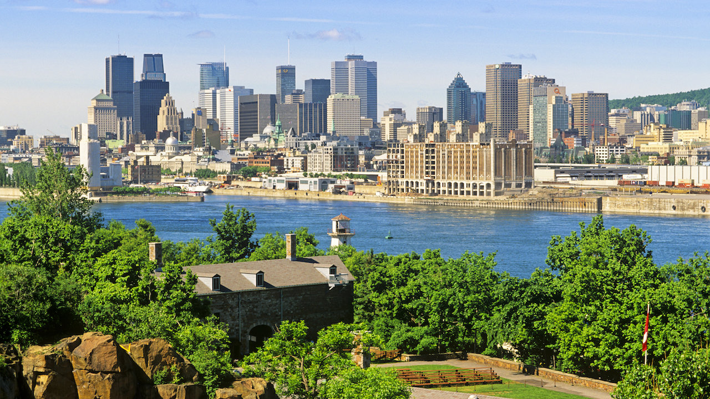
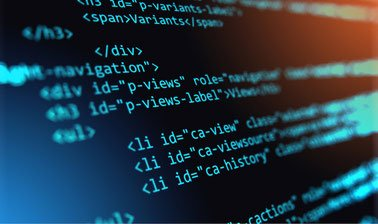

A Bit About Me
Born in Montreal, and went through multiple career types in my life. I am now looking at becoming a full stack web developer. Prior to switching to web I was a Chef, sadly due to the covid crisis I was forced to look at alternative career choices. This led me to rediscovering an old interest with learning HTML code. Throughout my initial research the idea of becoming a full stack developer has caught my eye greatly.
So after being a Chef and working in the hospitality industry, I look forward to expanding my horizons into the web domain.
Goals
My current goals is to build up a set of skills to become a full stack developer, with a starting point in the following:
- HTML
- CSS
- JavaScript
- Python
Once I have a few projects under my portfolio, I hope to find a job with a web development company to begin the real part of my career. I hope that it is a position that allows me to work remotely, that way I can also pursue my love of cooking on the side from home.
